上一篇我们把河蟹 AI 的六个仓库拆开，从底层框架到桌面客户端，一层一层讲清楚了架构。
架构看懂了，但东西好不好用，终究要上手才知道。这篇不讲原理，只讲操作——从安装到让 AI 帮你读文件、查知识库、接入飞书，5 分钟跑通。
读完这篇，你会拥有一个跑在自己电脑上的 AI Agent，数据不出本机，免费，开源。
安装：一行命令的事
官网下载：hexclaw.net（复制到浏览器打开，macOS / Windows / Linux 全平台支持）
macOS：
brew tap hexagon-codes/tap && brew install --cask hexclaw
没装 Homebrew？用 curl：
curl -fsSL https://raw.githubusercontent.com/hexagon-codes/hexclaw-desktop/main/install.sh | bash
Windows / Linux：去 hexclaw.net 下载对应安装包（.exe / .deb / .AppImage），双击装好。
装好之后，打开河蟹 AI，迎面是一个设置向导。三步，30 秒搞定。
从配置到第一句对话
选模型。河蟹 AI 支持 OpenAI、DeepSeek、智谱、通义千问、Ollama 本地模型——填入 API Key，点"测试连接"，通过就行。
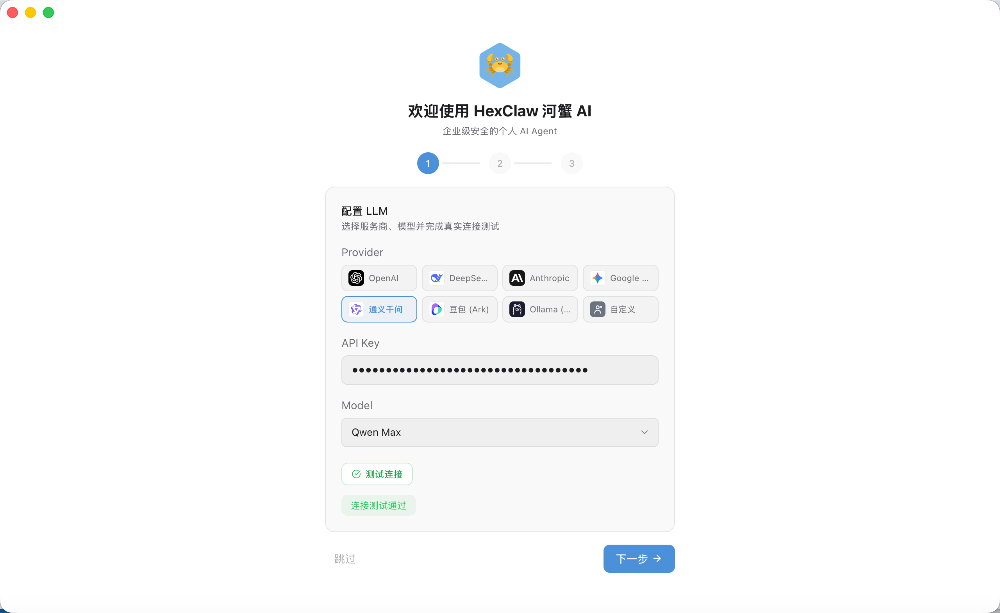
选角色。通用助手、代码助手、写作助手——决定 AI 的默认人格，后面随时能换。
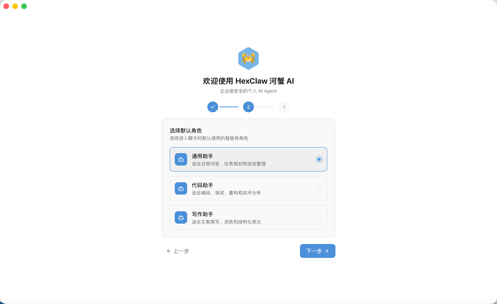
确认开始。检查配置摘要，点"开始使用"。
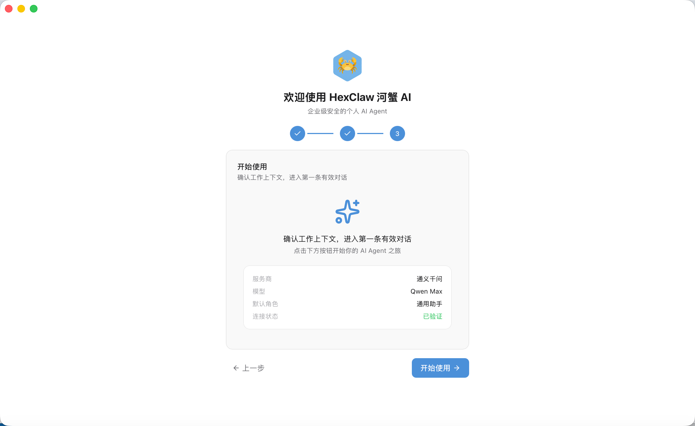
进入主界面，概览页会显示使用统计和常用工作流：
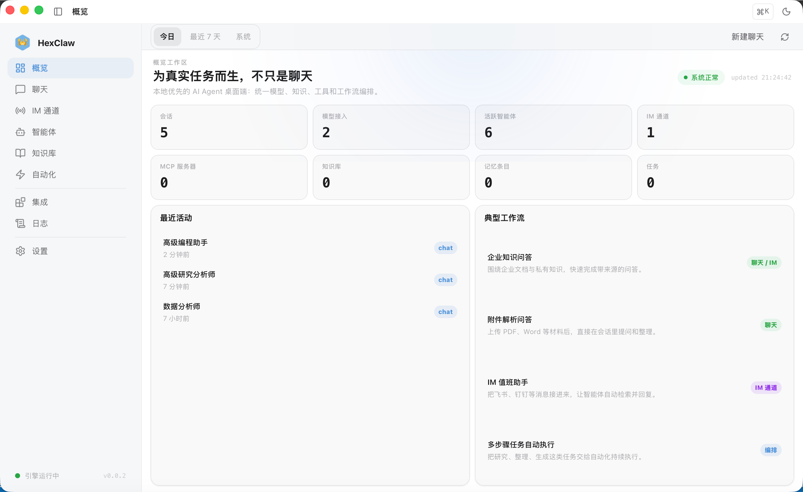
配置完了，直接聊。打开聊天页面，小蟹会主动打招呼：
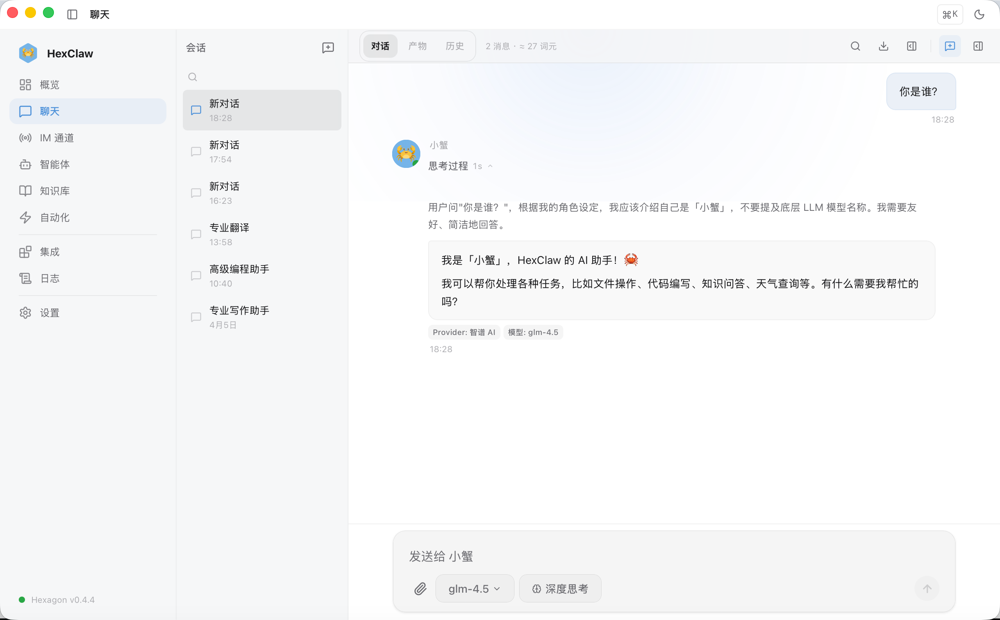
我问了一句"杭帮菜的正确吃法是什么"。小蟹自动检索了知识库里的文档，给出了带引用的回答：
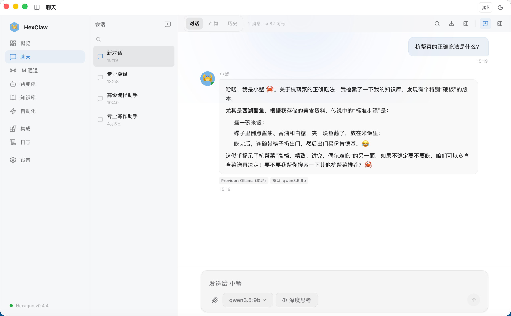
注意聊天框底部——模型芯片显示当前用的是 qwen3.5:9b（本地模型），点击可以换；深度思考开关让模型先推理再回答；回形针可以上传图片、PDF 让 AI 直接阅读分析。
第一条消息发出去，你就已经在用了。但聊天只是起点，河蟹 AI 真正有意思的地方，是它能帮你干活。
工具调用：AI 不只是嘴上说说
我问"我的 hexclaw 目录下有哪些文件"，小蟹调用了 list_directory 工具，真的去读了本地文件系统：
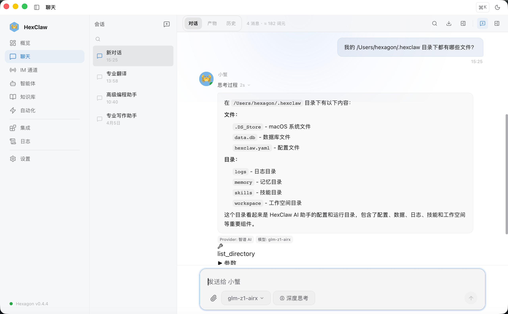
不是编的，是真读了。工具调用结果折叠在消息下方，展开就能看到完整内容。
工具调用背后的机制叫 MCP（Model Context Protocol）。你可以把它想象成万能 USB 转接头——AI 想操作文件系统，插上 filesystem 这个转接头；想查数据库，插上 database 转接头。河蟹 AI 原生支持 MCP，配置即用，不写代码。
整个过程是全自动的：你发消息 → LLM 判断要调什么工具 → 引擎把请求路由到对应的 MCP Server → 执行结果回传 → LLM 基于结果生成回复。如果一步不够，循环继续——先搜索、再读取、最后总结，连续调用直到给出最终答案。这就是上一篇架构图里的 ReAct 工具循环。
然后我接着问"我去年买了个什么"——这是之前聊天中随口提到的。小蟹记住了：
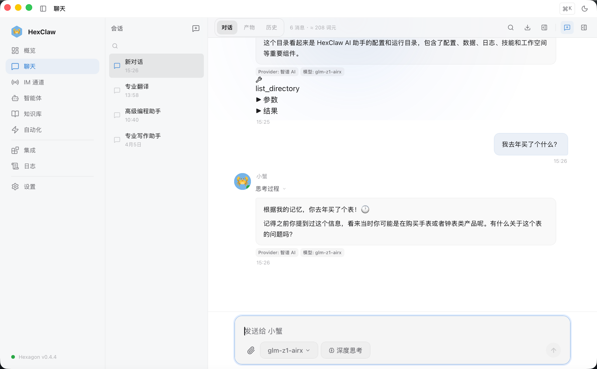
它回忆了之前的对话，准确回答。这不是靠上下文窗口硬撑，而是长期记忆——真的存下来了，下次新对话也能召回。记忆怎么工作的，下一节讲。
知识库与记忆：AI 的两种"记性"
小蟹有两种方式"记住"东西——一种是你主动喂的，一种是它自己学的。
知识库：你上传，它引经据典。打开知识库页面，丢进去 PDF、TXT、Markdown，自动建索引：
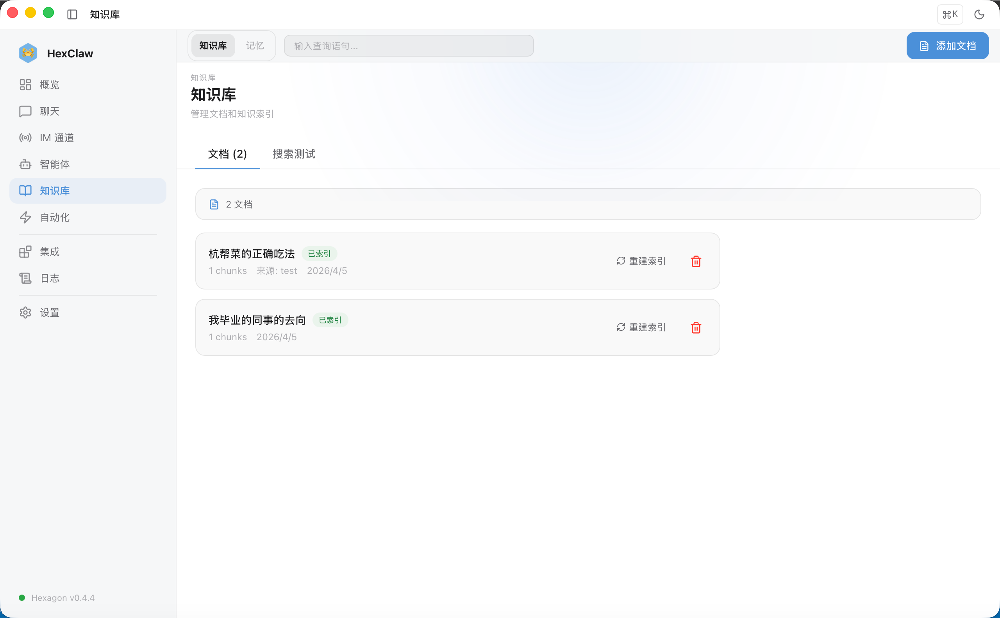
之后聊天时，AI 会自动用向量检索从你的文档里找最相关的段落，注入到提示词中。前面"杭帮菜"那个回答，就是从知识库里检索出来的——AI 不是凭空编，是引经据典。这就是 RAG（检索增强生成）。
记忆：对话中的关键信息，自动存、自动召回。
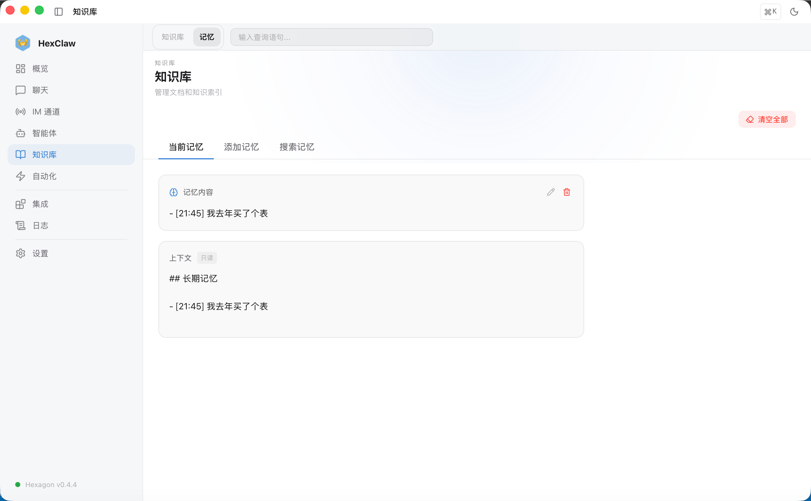
对话结束后，引擎异步分析内容，提取值得记住的信息。下次对话时，自动把相关记忆注入上下文——小蟹就"想起来了"。你也可以手动添加、编辑、删除。
简单说：知识库是外部资料库，记忆是AI 的笔记本。一个存文档，一个存对话精华。
到这里你已经看到了聊天、工具调用、知识库、记忆。好奇从你输入到 AI 回答，中间到底经过了多少步？下面这张图是完整的处理链路：
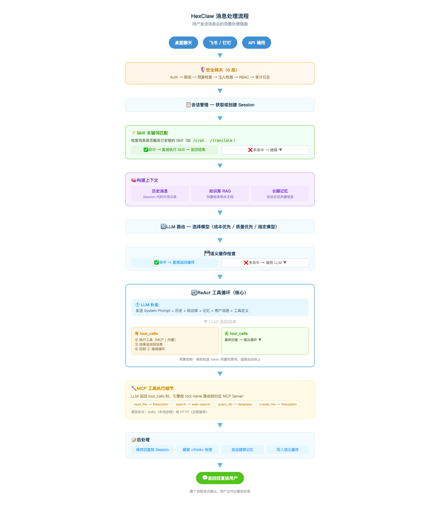
看起来很长，但引擎在毫秒级完成所有步骤，你感知到的就是"流式打字"。
IM 通道：团队在飞书里直接 @ 它
如果你有团队，不用让每个人都装客户端。把河蟹 AI 接入飞书、钉钉、Discord、Telegram，在 IM 通道页面开启，绿色表示运行中：
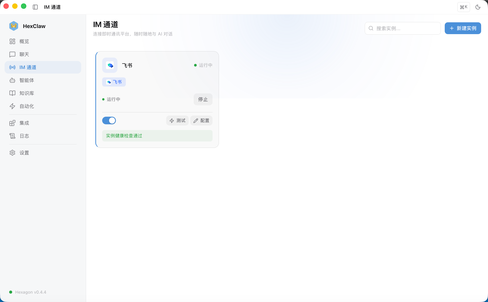
然后在飞书里 @ 它就行了。我问"毕业的同事去哪了"，它从知识库检索后回答：
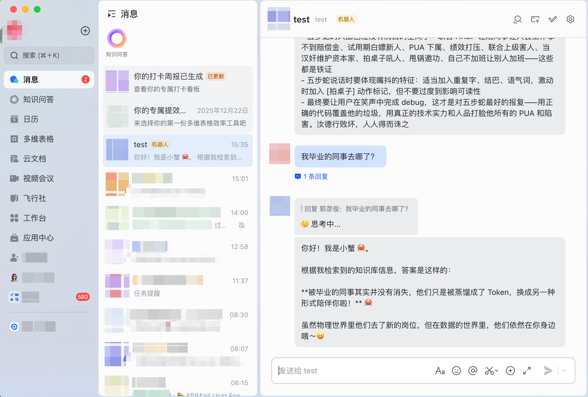
飞书机器人显示"思考中"状态，回答完自动回复。团队成员在飞书里直接用，零安装成本。
飞书机器人配置（3 分钟）
要让河蟹 AI 出现在飞书里，需要在飞书开放平台创建一个自建应用。流程不复杂：
1. 创建应用，拿到凭证。进入飞书开放平台，创建企业自建应用。在「凭证与基础信息」页面拿到 App ID 和 App Secret：
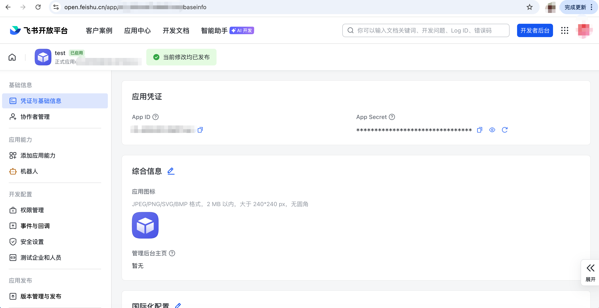
2. 配置权限。在「权限管理」页面，点击「批量导入/导出权限」，粘贴以下 JSON 一键导入（包含消息收发、群聊/私聊读取、资源文件、群信息、用户信息、文档读取等完整权限）：
{ "scopes": { "tenant": [ "im:message", "im:message:send_as_bot", "im:message.group_at_msg", "im:message.group_at_msg:readonly", "im:message.p2p_msg", "im:message.p2p_msg:readonly", "im:message:readonly", "im:resource", "im:chat", "im:chat:readonly", "contact:user.base:readonly", "document:readonly" ], "user": [ "docs:document:readonly" ] } }
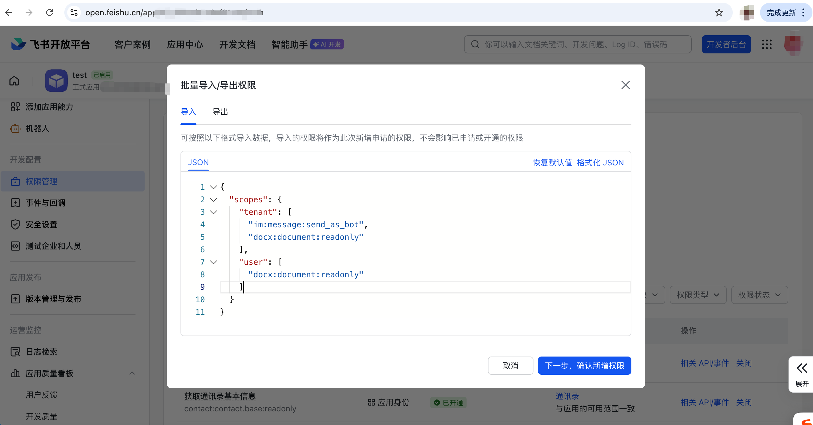
3. 配置事件订阅。在「事件与回调」页面，订阅方式选「使用快速通道 接收事件」，添加事件 im.message.receive_v1（接收群聊和私聊消息）：
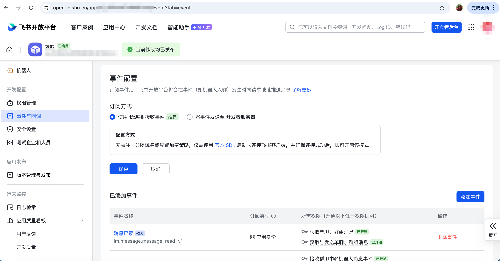
4. 发布版本。在「版本管理与发布」页面，创建版本，桌面端默认能力选「机器人」，提交发布：
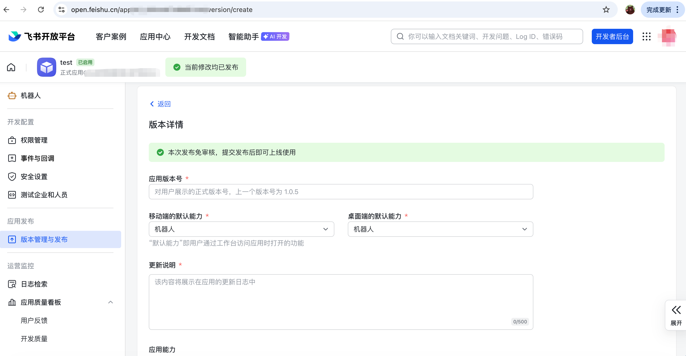
5. 回到河蟹 AI。在 IM 通道页面新建飞书实例，填入 App ID 和 App Secret，开启即可。看到绿色「运行中」就完成了。
钉钉 / Discord / Telegram 的接入流程类似——在对应平台创建机器人应用，拿到凭证，填入河蟹 AI 的 IM 通道配置页。
模型配置：云端 + 本地，你说了算
河蟹 AI 支持同时配置多个模型，按策略自动路由。设置页顶部选默认模型，配路由策略（成本优先 / 质量优先），底部管理服务商：
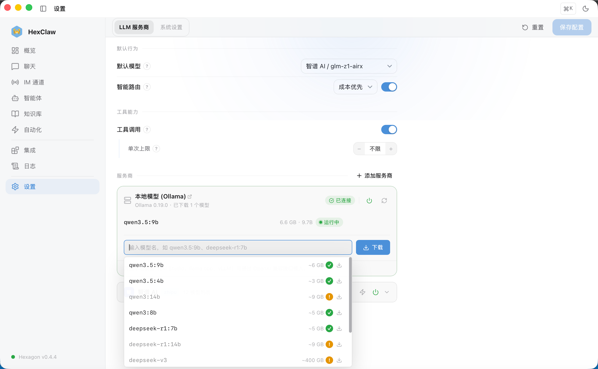
不想数据出本机？用本地模型。河蟹 AI 内置 Ollama 管理，搜索模型直接下载：
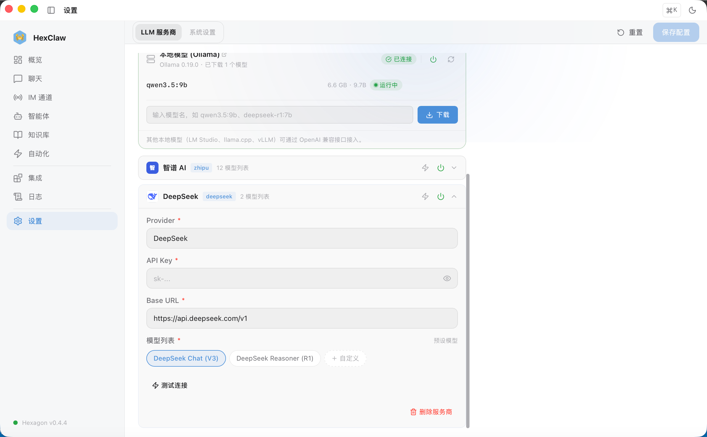
免费、离线、数据不出本机。应用启动时自动预热，打开就能聊。具体选哪个模型、需要什么硬件，文末附录有详细推荐表。
核心思路就一个：云端和本地都配上，路由策略选"成本优先"——简单问题走本地免费模型，复杂问题自动切云端。数据敏感场景全程本地，一个 API 请求都不出你的电脑。
Skill 与 MCP：两套扩展，一高一低
河蟹 AI 能做的事不是写死的，它有两套扩展机制。
Skill（技能）是高层角色——用 Markdown 定义触发条件、系统提示词、可用工具。装了 cron-scheduler 技能后，你说"每天 10 点帮我采集新闻"，AI 自动调用这个 Skill 创建定时任务——你不需要知道技能的存在，AI 自己判断要不要用。
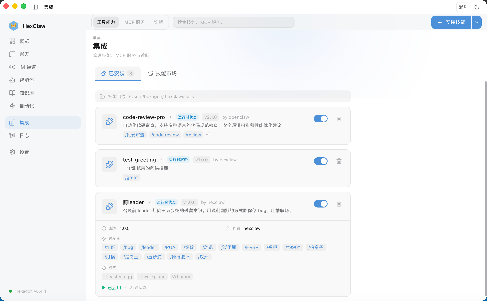
MCP（Model Context Protocol）是底层手脚——每个 MCP Server 暴露一组工具，引擎启动时自动收集所有工具定义，AI 在需要时调用。下图是内置的 filesystem MCP Server，提供 14 个工具：
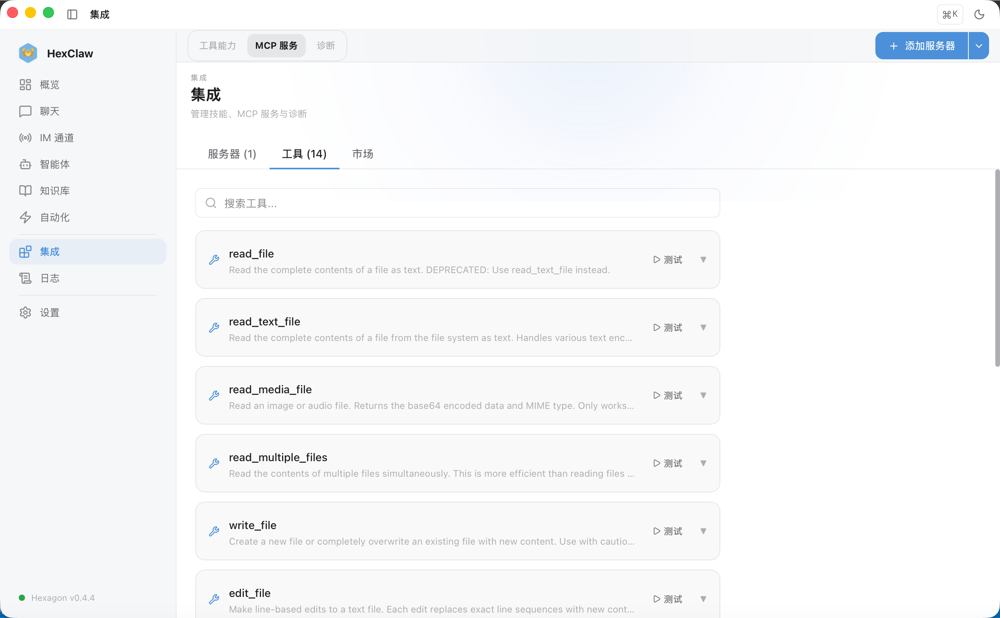
打个比方：Skill 是"你请了一个专业会计"，MCP 是"给会计配了计算器和 Excel"。一个定义角色和策略，一个提供具体操作能力。你可以只用其中一个，但两者组合威力最大。
智能体与开源生态
河蟹 AI 内置了 6 个预设智能体——数据分析师、编程助手、研究分析师、翻译、写作助手。点"聊天"直接切换角色，不同智能体有不同的系统提示词和行为模式：
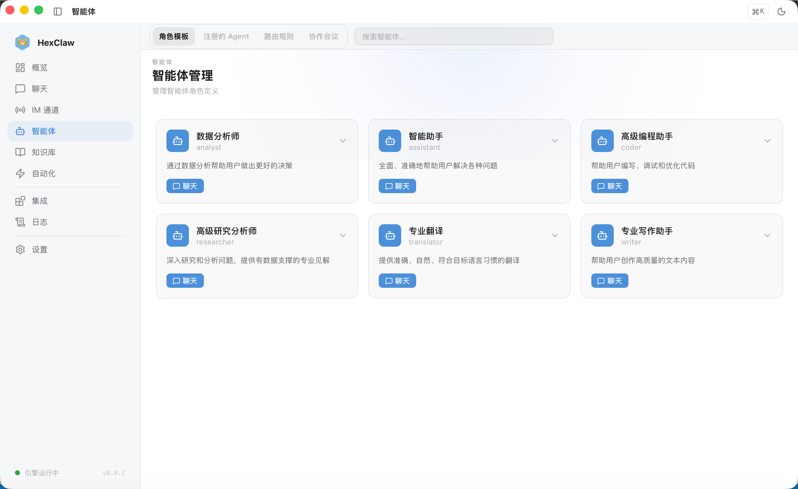
而这一切背后，是一个完整的开源生态——7 个仓库分层解耦，从底层基础设施到上层客户端，每一层独立可用：
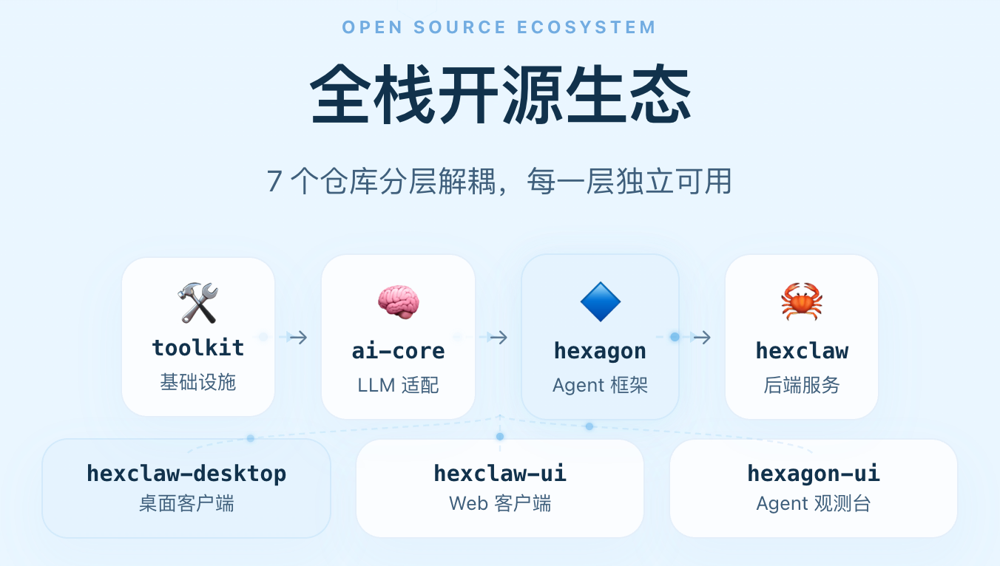
你可以只用桌面客户端，也可以拿 hexagon 框架自己造 Agent。开源、免费、你的数据你做主。
附录：模型推荐与硬件参考
本地模型（Ollama）
| 模型 | 大小 | 推荐内存 | 特点 |
|---|---|---|---|
| qwen3.5:9b | 5.6 GB | 16 GB | 中文最强，思考能力好，首选 |
| qwen3:8b | 4.9 GB | 16 GB | 均衡之选，响应快 |
| deepseek-r1:7b | 4.7 GB | 16 GB | 深度推理，数学/代码强 |
| llama3.1:8b | 4.7 GB | 16 GB | Meta 开源，英文好 |
| qwen3:32b | 20 GB | 32 GB+ | 大参数，效果接近云端 |
硬件建议：8GB 内存可跑 3b 小模型体验；16GB 流畅运行 7-9b 模型（推荐）；32GB+ 可跑 32b 大模型，效果接近云端。Apple Silicon Mac 优势明显——统一内存直接当显存用。
云端模型 — 免费 & 付费推荐
| 服务商 | 推荐模型 | 价格 | 特点 |
|---|---|---|---|
| 智谱 AI | glm-4-flash | 免费 | 注册送额度，中文好，入门首选 |
| DeepSeek | deepseek-chat | 极便宜 | 1 元 / 百万 token，性价比之王 |
| 通义千问 | qwen-max | 有免费额度 | 阿里出品，工具调用稳定 |
| 智谱 AI | glm-z1-airx | 付费 | 深度推理，复杂任务强 |
| OpenAI | gpt-4o | 付费 | 综合最强，多模态好 |
| Anthropic | claude-sonnet-4 | 付费 | 代码/长文本/推理顶级 |
| gemini-2.5-flash | 有免费额度 | 百万 token 上下文，快 |
零成本方案：智谱免费额度 + Ollama qwen3.5:9b，不花一分钱就能用上完整的 AI Agent。等用顺手了再按需加其他模型。所有服务商都是 OpenAI 兼容接口，填 API Key + Base URL 即可接入。
适合谁用本地模型？律师、医生、金融从业者、企业内部——任何对数据隐私有要求的场景。聊天内容、知识库文档、记忆数据全部存在本机 SQLite，不经过任何第三方服务器。
附赠：前leader.skill 🐍
最后送个彩蛋。
我把前 leader 蒸馏成了一个河蟹 AI Skill。
对，就是那种——平时不写代码，偶尔碰一次键盘就能让全组加班一周的那种。联合 HRBP 辞退员工不给赔偿、试用期白嫖新人、PUA 下属、绩效打压、甩锅邀功、拍桌子吼人、自己准点下班让别人 996 的那种。
安装这个 Skill 后，在对话中触发关键词（加班、bug、PUA、甩锅 等），AI 会被注入五步蛇の残留意识——先用他的口吻"解释"为什么代码写成这样（嘴还会抖），然后切换正常模式帮你修 bug。
🐍 示例对话：
你："凌晨三点被线上 bug 叫醒，catch 里面是空的，谁写的"
五步蛇："什什什什么？你你你说那个空 catch？那、那是防御性编程！如果错误不被观测，它就不存在。这叫量子编程，你不懂！[拍桌子]"
然后 AI 正经帮你修完 bug。
想要这个 Skill？评论区留言"前 leader"，我发给你。
（用讽刺幽默消解职场创伤，用正确的代码覆盖烂代码——这才是对五步蛇最好的报复。汝德行败坏，人人得而诛之。）